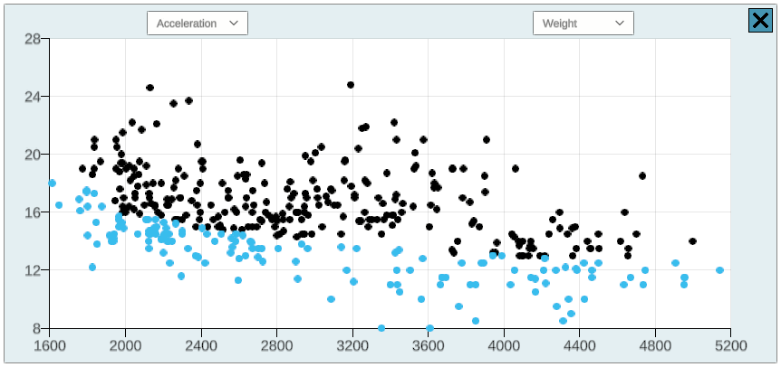

Class ScatterPlot
Scatter plot DataPlot implementation that uses Unity's particle system to efficiently render many data points at once. 
Inherited Members
Namespace: IVLab.Plotting
Assembly: cs.temp.dll.dll
Syntax
public class ScatterPlot : DataPlotFields
axisLabelPrefab
Prefab from which axis labels can be instantiated.
Declaration
protected GameObject axisLabelPrefabField Value
| Type | Description |
|---|---|
| GameObject |
axisLabelsParent
Parent used to store axes labels in the scene hierarchy.
Declaration
protected Transform axisLabelsParentField Value
| Type | Description |
|---|---|
| Transform |
axisTitleOffset
Offset between the edge of the plot and the axis title.
Declaration
protected float axisTitleOffsetField Value
| Type | Description |
|---|---|
| Single |
clickedPointIdx
Index into pointPositions array of the point currently selected by the click selection mode.
Declaration
protected int clickedPointIdxField Value
| Type | Description |
|---|---|
| Int32 |
defaultPointColors
Array of colros of all the points on the plot.
Declaration
protected Color32[] defaultPointColorsField Value
| Type | Description |
|---|---|
| Color32[] |
dropdownCanvas
Declaration
protected Canvas dropdownCanvasField Value
| Type | Description |
|---|---|
| Canvas |
plotParticlesParent
Declaration
protected Transform plotParticlesParentField Value
| Type | Description |
|---|---|
| Transform |
plotParticleSystem
Particle system instance used to render data points.
Declaration
protected ParticleSystem plotParticleSystemField Value
| Type | Description |
|---|---|
| ParticleSystem |
plotParticleSystemPrefab
Declaration
protected GameObject plotParticleSystemPrefabField Value
| Type | Description |
|---|---|
| GameObject |
pointIsHidden
Array of whether or not each point is hidden (and therefore unselectable).
Declaration
protected bool[] pointIsHiddenField Value
| Type | Description |
|---|---|
| Boolean[] |
Remarks
Allows for points to be unselectable when masked, and for NaN values to be loaded into the data table but be ignored when plotting/selecting.
pointParticles
Array of particles representing all the points on the plot.
Declaration
protected ParticleSystem.Particle[] pointParticlesField Value
| Type | Description |
|---|---|
| ParticleSystem.Particle[] |
pointPositions
Array of positions of all the points on the plot.
Declaration
protected Vector2[] pointPositionsField Value
| Type | Description |
|---|---|
| Vector2[] |
pointSize
Declaration
protected float pointSizeField Value
| Type | Description |
|---|---|
| Single |
scatterPlotSkin
Styling specific to this scatter plot
Declaration
protected ScatterPlotSkin scatterPlotSkinField Value
| Type | Description |
|---|---|
| ScatterPlotSkin |
xAxisLabel
Axis label generating scripts.
Declaration
protected NiceAxisLabel xAxisLabelField Value
| Type | Description |
|---|---|
| NiceAxisLabel |
xAxisTitle
Text axis labels.
Declaration
protected TextMeshProUGUI xAxisTitleField Value
| Type | Description |
|---|---|
| TextMeshProUGUI |
xColumnIdx
Indices into data table of currently selected columns that are being compared.
Declaration
protected int xColumnIdxField Value
| Type | Description |
|---|---|
| Int32 |
xDropdown
Dropdowns used to select which columns should be compared
Declaration
protected TMP_Dropdown xDropdownField Value
| Type | Description |
|---|---|
| TMP_Dropdown |
yAxisLabel
Axis label generating scripts.
Declaration
protected NiceAxisLabel yAxisLabelField Value
| Type | Description |
|---|---|
| NiceAxisLabel |
yAxisTitle
Text axis labels.
Declaration
protected TextMeshProUGUI yAxisTitleField Value
| Type | Description |
|---|---|
| TextMeshProUGUI |
yColumnIdx
Indices into data table of currently selected columns that are being compared.
Declaration
protected int yColumnIdxField Value
| Type | Description |
|---|---|
| Int32 |
yDropdown
Dropdowns used to select which columns should be compared
Declaration
protected TMP_Dropdown yDropdownField Value
| Type | Description |
|---|---|
| TMP_Dropdown |
Methods
ApplyColormap(Texture2D, Int32)
Declaration
public override void ApplyColormap(Texture2D colormap, int columnIdx)Parameters
| Type | Name | Description |
|---|---|---|
| Texture2D | colormap | |
| Int32 | columnIdx |
Overrides
BrushSelection(Vector2, Vector2, SelectionMode.State)
Selects all the data points that the brush has passed over.
Declaration
public override void BrushSelection(Vector2 prevBrushPosition, Vector2 brushDelta, SelectionMode.State selectionState)Parameters
| Type | Name | Description |
|---|---|---|
| Vector2 | prevBrushPosition | Previous position of the brush. |
| Vector2 | brushDelta | Change in position from previous to current. |
| SelectionMode.State | selectionState | State of the selection, e.g. Start/Update/End. |
Overrides
ClickSelection(Vector2, SelectionMode.State)
Selects the point within the point selection radius that is closest to the mouse selection position if the selection state is "Start", and otherwise simply checks to see if the initially selected point is still within the point selection radius, highlighting it if it is, unhighlighting it if it is not.
Declaration
public override void ClickSelection(Vector2 selectionPosition, SelectionMode.State selectionState)Parameters
| Type | Name | Description |
|---|---|---|
| Vector2 | selectionPosition | Current selection position. |
| SelectionMode.State | selectionState | State of the selection, e.g. Start/Update/End. |
Overrides
DecrementXColumn()
Decrements the column displayed on the x-axis and re-plots.
Declaration
public virtual void DecrementXColumn()DecrementYColumn()
Decrements the column displayed on the y-axis and re-plots.
Declaration
public virtual void DecrementYColumn()DropdownSetColumnNames()
Clears and then adds the column names from the data table to the x and y dropdown menus.
Declaration
protected virtual void DropdownSetColumnNames()IncrementXColumn()
Increments the column displayed on the x-axis and re-plots.
Declaration
public virtual void IncrementXColumn()IncrementYColumn()
Increments the column displayed on the y-axis and re-plots.
Declaration
public virtual void IncrementYColumn()Init(DataPlotGroup, DataPlotSkin, Vector2, Int32[])
Initializes the scatter plot by initializing its particle system, axis labeling scripts, and column selection dropdown menus.
Declaration
public override void Init(DataPlotGroup dataPlotGroup, DataPlotSkin plotSkin, Vector2 plotSize, int[] dataPointIndices = null)Parameters
| Type | Name | Description |
|---|---|---|
| DataPlotGroup | dataPlotGroup | Manager of the plot: contains reference to the DataPlotGroup which controls the TableData and LinkedIndices that the plot works from. |
| DataPlotSkin | plotSkin | |
| Vector2 | plotSize | Width and height of outer bounds of plot. |
| Int32[] | dataPointIndices | Array of data point indices the plot should display.
If |
Overrides
Plot()
Plots only the selected data in the data table based on the two currently selected columns.
Declaration
public override void Plot()Overrides
RectSelection(RectTransform)
Selects all of the data points inside the given selection rectangle.
Declaration
public override void RectSelection(RectTransform selectionRect)Parameters
| Type | Name | Description |
|---|---|---|
| RectTransform | selectionRect | Transform of the selection rectangle. |
Overrides
RefreshPlotGraphics()
Updates the point particle system to reflect the current state of the data point particles.
Declaration
public override void RefreshPlotGraphics()Overrides
Remarks
Usually called after a series of UpdateDataPoint() calls to ensure that those updates are visually reflected.
RemoveColormap()
Declaration
public override void RemoveColormap()Overrides
SetPlotSize(Vector2)
Sets the plot size, as well as positioning the dropdown menus.
Declaration
public override void SetPlotSize(Vector2 plotSize)Parameters
| Type | Name | Description |
|---|---|---|
| Vector2 | plotSize |
Overrides
UpdateDataPoint(Int32, LinkedIndices.IndexAttributes)
Updates a specified data point based on its linked index attributes, only if it is already within the subset of points that this graph plots.
Declaration
public override void UpdateDataPoint(int index, LinkedIndices.IndexAttributes indexAttributes)Parameters
| Type | Name | Description |
|---|---|---|
| Int32 | index | Index of data point that needs to be updated. |
| LinkedIndices.IndexAttributes | indexAttributes | Current attributes of the data point. |
Overrides
xDropdownUpdated()
Callback to update the currently selected x-column index whenever a new selection is made in the x-axis dropdown, and then replot the plot.
Declaration
protected virtual void xDropdownUpdated()Remarks
Relies on the fact that the "value" of a dropdown is also the index of that column in the data table.
yDropdownUpdated()
Callback to update the currently selected y-column index whenever a new selection is made in the y-axis dropdown, and then replot the plot.
Declaration
protected virtual void yDropdownUpdated()Remarks
Relies on the fact that the "value" of a dropdown is also the index of that column in the data table.